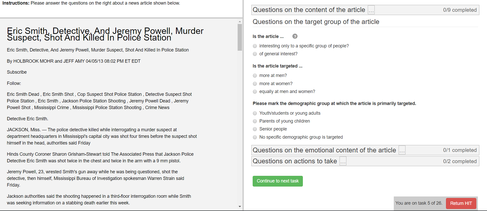

Welcome to Crowdsourcr!¶
Crowdsourcr is an application for conducting survey-like experiments online, especially when used in conjunction with Amazon Mechanical Turk.
Surveys are designed as XML files. A set of tasks are bundled as a HIT that can be posted on Mechanical Turk. The XML survey format allows for data entry by multiple workers (defined programmatically) and worker bonuses based on the level of agreement with other workers. The XML format also allows for conditional questions.
The following is an example from one real experiment asking Turkers to evaluate news articles:

Indices and tables¶
Crowdsourcr Contributers: Sam Grondahl, Kyle Miller, Markus Mobius, Tobias Schmidt, Ling Dong, Anna Croley